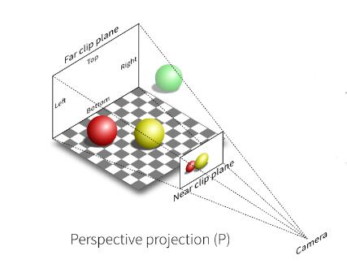

透视投影

透视投影的主要过程
透视投影的过程是先将Frustum（截锥体）转换为Cuboid（长方体），然后再用上面的方法对长方体做正交投影：

💡 我的理解
- 在Frustum（截锥体）-> Cuboid（长方体）之前应该有一步平移的过程，让Frustum的中心轴与z轴重合。类似于正交投影中的第一步。因此真正的过程应该是这样的：
平移（正交投影的第一步） ===> Frustum（截锥体）-> Cuboid（长方体） ===> 缩放（正交投影的第二步）- 课程中用挤压来解决“Frustum（截锥体）-> Cuboid（长方体）”的过程，方便理解的同时却也引入的歧义。因为这里的Frustum是视锥体，跟几何锥体还是有区别的。这也是为什么挤压之后z会变。
要把Frustum转换为Cubuid是仿射变换的过程，主要方法仍是求出仿射变换的矩阵。
在正交投影中，是根据正交变换的过程，将仿射变换矩阵分解为S, R, T三个部分，依次计算出S， R, T再将它们合并。
在透视投影中，仍然不涉及旋转，但是平移和缩放的过程是揉合在一起的，难以拆分，因此采用选取特殊点的方式，直接求出投视投影的变换矩阵。
\(M_{persp\rightarrow ortho}\)
侧面分析
从侧面看，存在相似三角形（图中很容易看出）

通过相似三角形，可以得到：
\[ y'=\frac{n}{z}y\\ x'=\frac{n}{z}x \]
💡 这个公式成立的前提是frustum的中心轴与z轴重合，这也印证了前面提到的“frustum->cuboid之前应该先平移”。
我们的目的是将 \((x, y, z)\) 转换为 \((x', y', z)\)。
现在可以得到：
\[ \left( \begin{array}{c} x\\ y\\ z\\ 1\\ \end{array} \right) \Rightarrow \left( \begin{array}{c} nx/z\\ ny/z\\ unknown\\ 1\\ \end{array} \right) \]
为坐标乘以 \(z\)，得：
\[ \left( \begin{array}{c} x\\ y\\ z\\ 1\\ \end{array} \right) \Rightarrow \left( \begin{array}{c} nx/z\\ ny/z\\ unknown\\ 1\\ \end{array} \right) ==\left( \begin{array}{c} nx\\ ny\\ still,,unknown\\ z\\ \end{array} \right) \]
想要将 \(\left( \begin{array}{c} x\\ y\\ z\\ 1\\ \end{array} \right)\) 投影为 \(\left( \begin{array}{c} nx\\ ny\\ unknown\\ z\\ \end{array} \right) \)，需要求一个投影矩阵：
\[ M_{persp\rightarrow ortho}^{\left( 4\times 4 \right)}\left( \begin{array}{c} x\\ y\\ z\\ 1\\ \end{array} \right) =\left( \begin{array}{c} nx\\ ny\\ unknown\\ z\\ \end{array} \right) \]
我们已经知道一些数据了，所以能求出M的一些值（显然，由上式可得）：
\[ M_{persp\rightarrow ortho}^{\left( 4\times 4 \right)}=\left( \begin{matrix} n& 0& 0& 0\\ 0& n& 0& 0\\ ?& ?& ?& ?\\ 0& 0& 1& 0\\ \end{matrix} \right) \]
n面分析和f面分析
M已经被解决不少了，但还差一些，不过，我们还有一些坐标点不变的性质可以使用：
-
Frustum的n（近处）面，所有坐标是不变化的。
-
f面的Z轴坐标值，是不变化的；
-
Z轴穿过的中心点的坐标值，是不变化的。

n面，所有坐标点不变，那么取一个n面上随便一点，该点的Z轴坐标值为n，即：
\[ \left( \begin{array}{c} x\\ y\\ n\\ 1\\ \end{array} \right) \]
为坐标乘以n：
\[ \left( \begin{array}{c} nx\\ ny\\ n^2\\ n\\ \end{array} \right) \]
既然这一点在投影前后不会变化，我们可以列出下面的式子：
\[ \left( \begin{array}{c} nx\\ ny\\ n^2\\ n\\ \end{array} \right) =\left( \begin{matrix} n& 0& 0& 0\\ 0& n& 0& 0\\ ?& ?& ?& ?\\ 0& 0& 1& 0\\ \end{matrix} \right) \left( \begin{array}{c} x\\ y\\ n\\ 1\\ \end{array} \right) \]
上式其实只剩下下面这个式子要求：
\[ n^2=\left( ?, ?, ?, ? \right) \left( \begin{array}{c} x\\ y\\ n\\ 1\\ \end{array} \right) \]
具体来说，是这样的：
\[ n^2=\left( 0, 0, A, B \right) \left( \begin{array}{c} x\\ y\\ n\\ 1\\ \end{array} \right) \]
于是可以得到：
\[ An+B=n^2 \]
同理，在f面上，变换后点(0,0,f)不变，可以得到：
\[ Af+B=f^2 \]
联立上述AB方程，解得：
\[ A=n+f\\ B=-nf \]
所以我们推导出了透视投影的一个变换矩阵：
\[ M_{persp\rightarrow ortho}^{\left( 4\times 4 \right)}=\left( \begin{matrix} n& 0& 0& 0\\ 0& n& 0& 0\\ 0& 0& n+f& -nf\\ 0& 0& 1& 0\\ \end{matrix} \right) \]
透视投影矩阵
透视投影的最终的变换矩阵是 M = M（正交）M（透视）
为什么透视投影会z会后移
从数学上
定义z'为变换后的z坐标，那么z' = (n+f)-nf/z
\[ f = z' - z = (n+f) - nf/z -z \]
\[ zf = -z^2 + (n+f)z - nf \]
zf是一个开口向下的二次曲线。它与x轴的交点在z=n处和z=f处。当z位于(f, n)区间时，zf>0。
由于f<0且n<0，当z位于(f, n)区间时，z<0，因此f<0，即z'-z<0
z'<z，因此z会变远。
从直觉上
一开始会觉得有点奇怪，违反直觉。细想之后觉得是很合理。
因为透视投影要表现出近大远小的效果。近大不止是x轴和y轴的大，z轴上也会大。即同一个物体，如果放得近，它在z轴上会更大点。
空间上也是如此，透视前的空间，把它以z=0分成前后均匀的两半，近的那一半，在透视后必然要占更大的z轴范围，因此z会往后。
本文出自CaterpillarStudyGroup，转载请注明出处。
https://caterpillarstudygroup.github.io/GAMES101_mdbook/